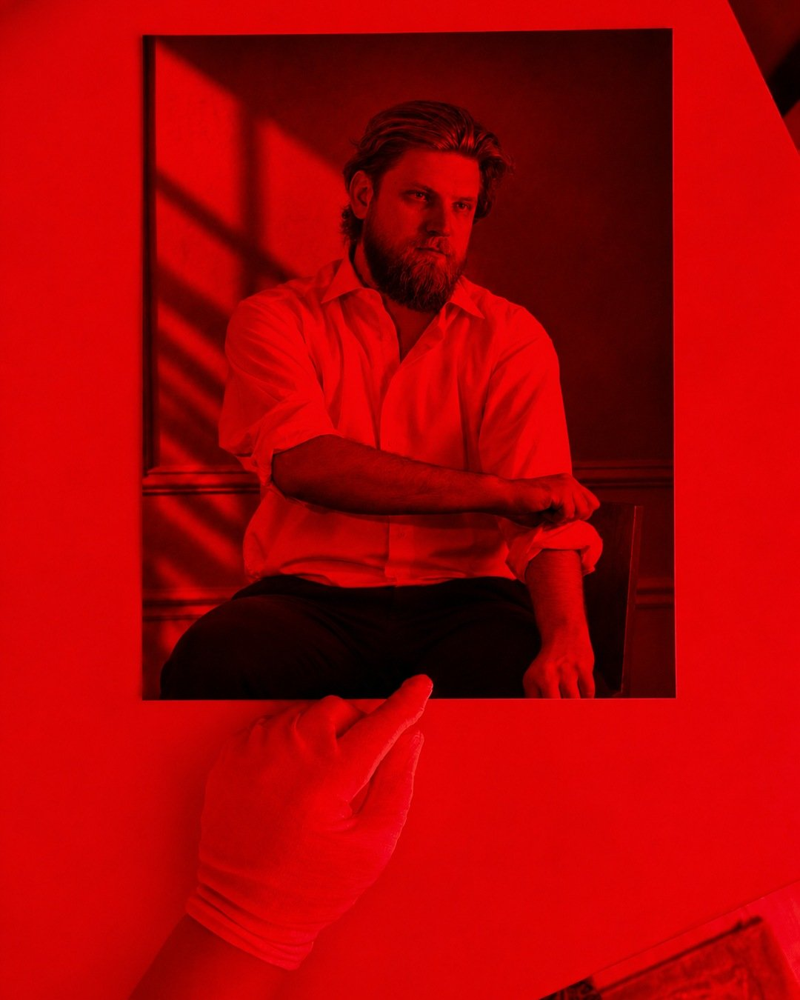
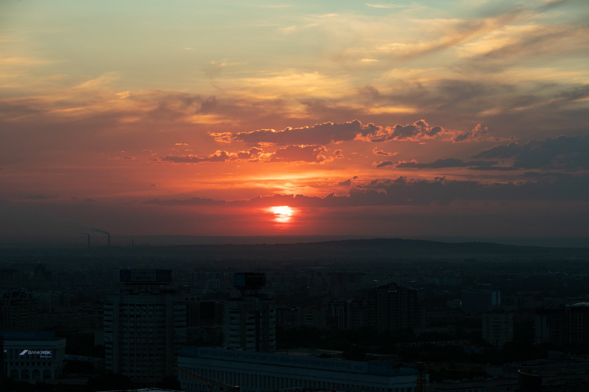
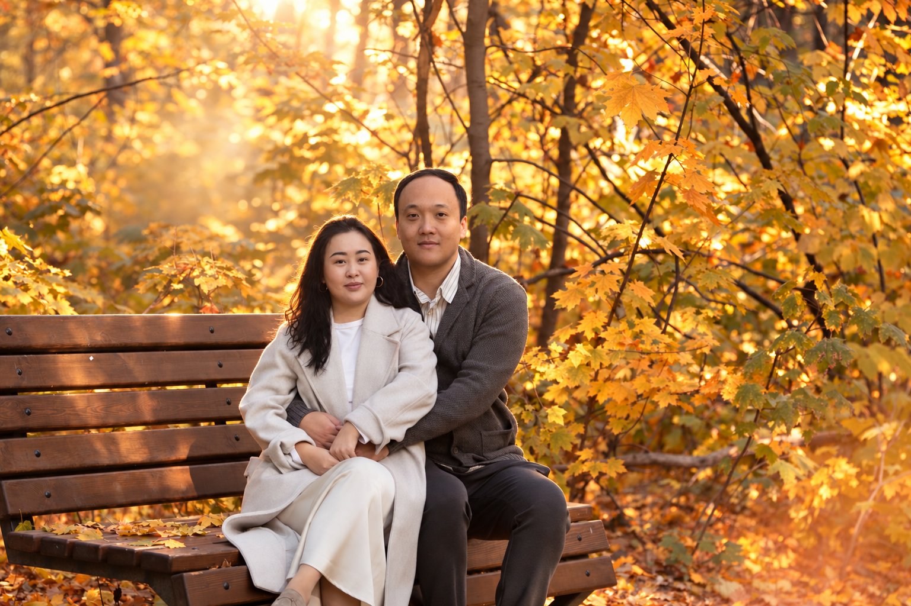
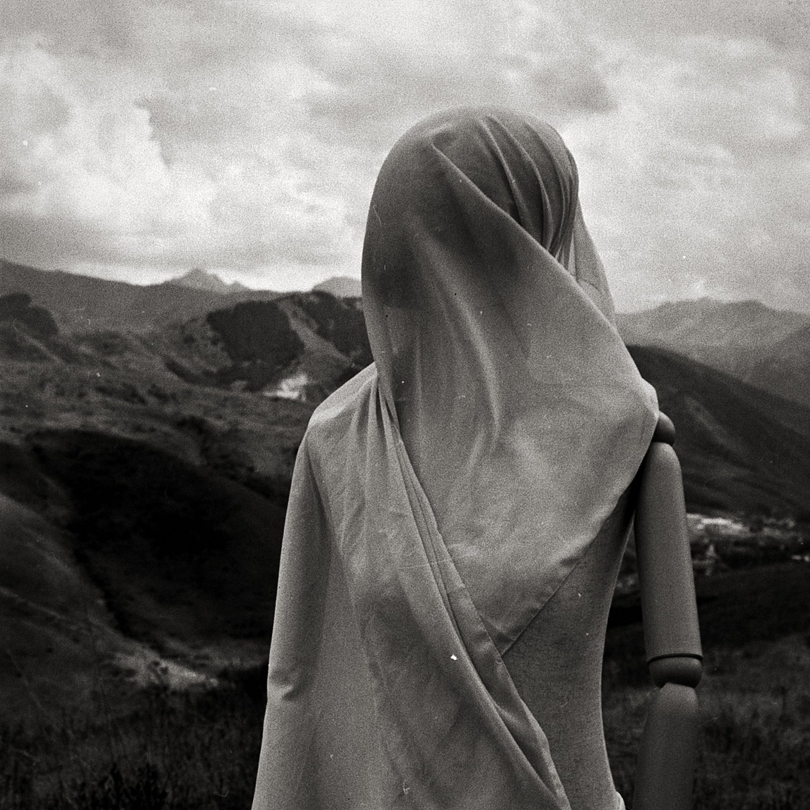

Darkroom prints
Silver gelatin prints made by hand from my negatives. I print every sheet myself.
- 30×40 cm
- In stock and made to order
- Unframed or framed
Silver gelatin prints made by hand from my negatives. I print every sheet myself.

Silver gelatin prints made by hand from my negatives. I print every sheet myself.

Prints from digital frames made for your space: we choose the size and material together.

A gift for any shoot. The recipient picks the date.

A subscription to new prints and series. Details will appear here later.